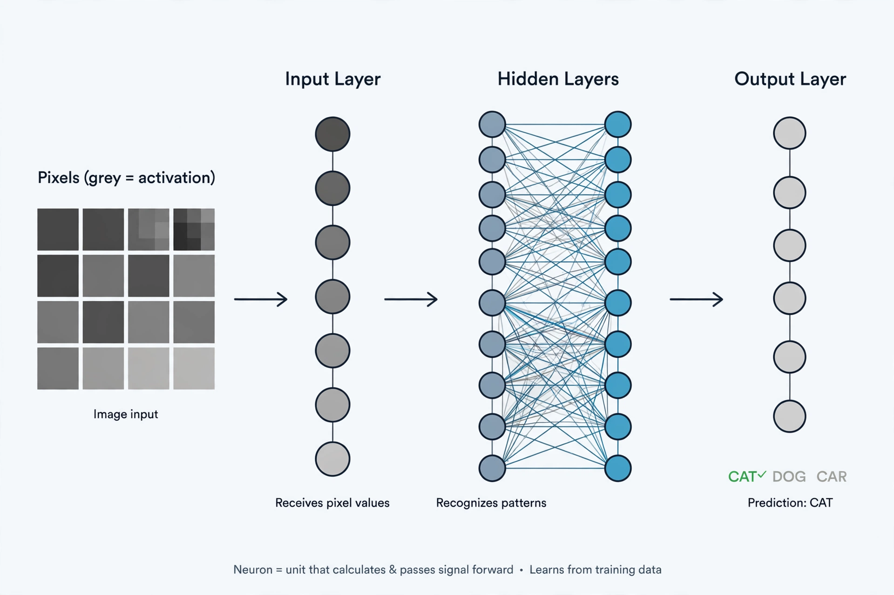

Abhijeeth Reddy · AIML-500, Workshop 3 · ← Back to portfolio
Written as a class discussion post (3.4): a simple explanation of neural networks in machine learning, built working with a generative AI model, with the diagram generated the same way.
A neural network is a computational program that enables computers to learn about something, inspired by a human brain.
Let’s learn about what a neuron is. A single mathematical unit, which is one of many units in a layer, which performs required mathematical calculations and sends the result forward, is called a neuron.
Let us consider the example of image recognition now. The pixels provide the activation, i.e. the grey shade of a given image, and all the pixels are identified and sent into the next layer of the neural network, where, in multiple layers, the image is digested and patterns are recognised, and ultimately AI recognises the image based on the training data.

We might have established the importance of training a model. Without training data, recognising a pattern gets us nowhere — the data is what turns the pattern into something useful.
How I built this explanation: I used chunking, breaking the idea into layers so each step adds one thing. I used a concrete example, image recognition, so the layers have something real to attach to. And I used plain language, keeping the explanation in simple words.
Disclosure: I learned the concepts from 3Blue1Brown’s “But what is a neural network?” (chapter 1), and I worked with Muse, an AI assistant, to organize this post and generate the diagram. When I asked it to generate an image with this essay, it generated an image which includes everything, including the definition and disclosure also. Then I optimised the prompt, asking it to just limit it to the explanation of neural networks. I realised maybe this is where human analysis comes in: we might neglect mentioning the importance of the topics that are important and not, because they are easily identifiable by humans but not by AI.